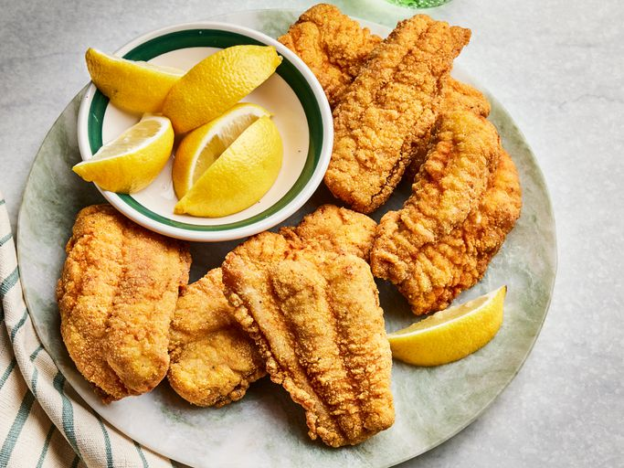

Home
Fried Catfish

Description
This fried catfish recipe is a classic Southern dish traditionally served with buttermilk hush puppies and buttermilk coleslaw.
Ingredients
- ½ cup buttermilk
- ½ cup water
- salt and pepper, to taste
- 1 pound catfish fillets, cut in strips
- 1 ½ cups fine cornmeal
- ½ cup all-purpose flour
- 1 teaspoon seafood seasoning, such as Old Bay™
- 1 quart vegetable oil for deep frying
Steps
- Gather all ingredients.
- Mix buttermilk, water, salt, and pepper in a small bowl. Pour mixture into a flat pan large enough to hold fillets.
- Arrange fillets in a single layer in the pan, turning to coat each side. Set aside to marinate.
- Combine cornmeal, flour, and seafood seasoning in a 2-gallon resealable plastic bag.
- Add fillets to the bag, a few at a time, and tumble gently until evenly coated.
- Heat oil in a deep fryer to 365 degrees F (185 degrees C). Fry fillets in hot oil until crisp and golden brown, about 3 minutes. Work in batches to avoid overcrowding, so fillets have room to brown properly.
- Drain on paper towels.
- Serve and enjoy!